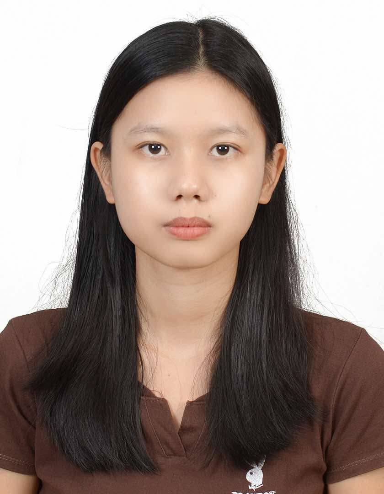

Automation
PLC ladder logic, I/O assignment, timers, counters, sequence control and pneumatics.
ENGINEERING PORTFOLIO / 2026
Exploring the intersection of electronics, programming and industrial automation. Responsible, curious and eager to turn classroom knowledge into practical engineering solutions.

01 / PROFILE
I am pursuing a Diploma in Mechatronics at Temasek Polytechnic. My interests include industrial automation, embedded systems and IoT. I enjoy connecting hardware and software to solve practical problems.
My goal is to gain hands-on engineering experience, strengthen my troubleshooting skills and contribute responsibly to a technical team.
Diploma in Mechatronics
Apr 2025 – Present
Undergraduate programme
Dec 2017 – Jan 2020
02 / TOOLKIT
PLC ladder logic, I/O assignment, timers, counters, sequence control and pneumatics.
Arduino, STM32 Nucleo, STM32CubeIDE, C programming and sensor interfacing.
Circuit connections, component testing and basic troubleshooting.
Python, C#, HTML, CSS, JavaScript, VS Code and Creo Parametric.
03 / SELECTED WORK
Hands-on coursework spanning industrial control, microcontrollers and electronic prototyping. Select a project to explore its full details.

CONTROL & AUTOMATION · GROUP PROJECT
A PLC-controlled concept for preparing a serving of food through four pneumatic stations: bowl transfer, dispensing, lid placement and cutlery dispensing.
Technical focus: Ladder logic, timed dispensing, supply counting, I/O mapping and pneumatic sequence control.
View full project →
HIGHER ENGINEERING SKILLS 1
A microcontroller-based project using a potentiometer, water sensor, eight LEDs and a relay. The application uses analog input values to control the LED sequence and switching output.
Technical focus: Arduino programming, analog inputs, digital outputs and breadboard wiring.
View full project →
HIGHER ENGINEERING SKILLS 2
The same HES 1 application implemented on STM32 Nucleo using embedded C. The design reads two analog inputs with multi-channel ADC and DMA, switching between potentiometer and water-level control around a 2.6 V threshold.
Technical focus: STM32CubeIDE, HAL, ADC, DMA and GPIO.
View full project →
ELECTRONIC PROTOTYPING
An electronic prototyping project involving an audio circuit board, Bluetooth input, speaker connections and enclosure assembly.
Technical focus: Electronic components, circuit assembly, wiring and practical hardware skills.
View full project →04 / EXPERIENCE
APR 2025 – PRESENT
Supported event setup and food and beverage service while coordinating with colleagues in busy environments.
JAN – AUG 2026
Helped fellow students understand academic concepts and complete learning activities.
Participated in student activities and interacted with people from different backgrounds.
Participated in leadership development activities focused on teamwork and communication.
05 / LET'S CONNECT
Interested in internship opportunities in IoT, industrial automation, embedded systems and engineering support.